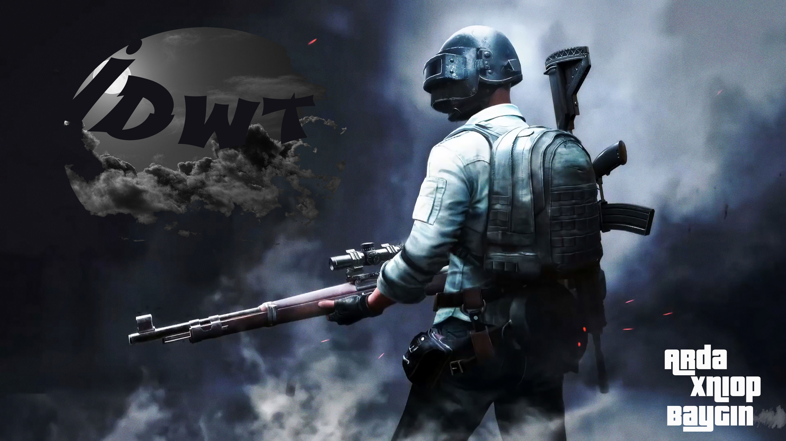

| Geri Dön |
İ.D.W.T Ömer sınıfa ilk girdiğinde Mustafa ile tanışmasının ardından Çınar ile de konuşmaya başladı, Arda en yakın arkadaşı "E" ile kavga ettikten sonra "Y"' un Arda' yı satıp "E" ile takılmasının sonucunda "E" ve "Y" ile takılmayı bıraktı, zaman geçti daha da samimi oldular zaman geçti kavga ettiler yeri geldi büyük şere**izlikler yaptılar birbirine ama hala bi arkadaşlardı, Teknoloji Tasarım Hocası sınıftan bir grup ve grup ismi istedi ve bu dört arkadaş Arda, Ömer, Çınar ve Mustafa' nın aklına birşey gelmedi Ömer ise İ****** D***** W***** T****** dedi ve onun kısaltması olan İ.D.W.T ismini verdiler
